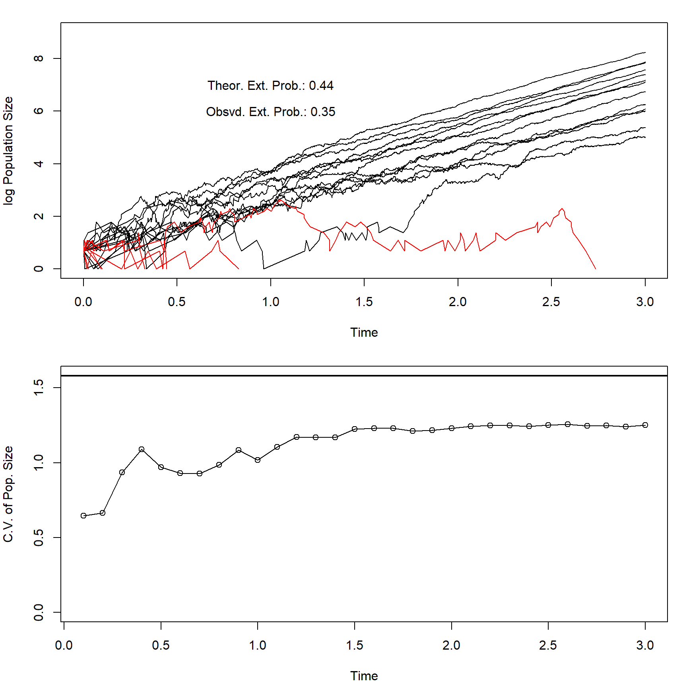

Last updated: 2021-03-01
Checks: 7 0
Knit directory: Theoretical_ecology_HW/
This reproducible R Markdown analysis was created with workflowr (version 1.6.2). The Checks tab describes the reproducibility checks that were applied when the results were created. The Past versions tab lists the development history.
Great! Since the R Markdown file has been committed to the Git repository, you know the exact version of the code that produced these results.
Great job! The global environment was empty. Objects defined in the global environment can affect the analysis in your R Markdown file in unknown ways. For reproduciblity it’s best to always run the code in an empty environment.
The command set.seed(20210122) was run prior to running the code in the R Markdown file. Setting a seed ensures that any results that rely on randomness, e.g. subsampling or permutations, are reproducible.
Great job! Recording the operating system, R version, and package versions is critical for reproducibility.
Nice! There were no cached chunks for this analysis, so you can be confident that you successfully produced the results during this run.
Great job! Using relative paths to the files within your workflowr project makes it easier to run your code on other machines.
Great! You are using Git for version control. Tracking code development and connecting the code version to the results is critical for reproducibility.
The results in this page were generated with repository version bb63f89. See the Past versions tab to see a history of the changes made to the R Markdown and HTML files.
Note that you need to be careful to ensure that all relevant files for the analysis have been committed to Git prior to generating the results (you can use wflow_publish or wflow_git_commit). workflowr only checks the R Markdown file, but you know if there are other scripts or data files that it depends on. Below is the status of the Git repository when the results were generated:
Ignored files:
Ignored: .Rhistory
Ignored: .Rproj.user/
Note that any generated files, e.g. HTML, png, CSS, etc., are not included in this status report because it is ok for generated content to have uncommitted changes.
These are the previous versions of the repository in which changes were made to the R Markdown (analysis/Homework6.Rmd) and HTML (docs/Homework6.html) files. If you’ve configured a remote Git repository (see ?wflow_git_remote), click on the hyperlinks in the table below to view the files as they were in that past version.
| File | Version | Author | Date | Message |
|---|---|---|---|---|
| Rmd | bb63f89 | KiseokUChicago | 2021-03-01 | HW6 |
| html | e5a4be3 | KiseokUChicago | 2021-02-24 | Build site. |
| Rmd | 99eeaf8 | KiseokUChicago | 2021-02-24 | publish |
| html | b900c5d | KiseokUChicago | 2021-02-22 | Build site. |
| Rmd | 245e09f | KiseokUChicago | 2021-02-22 | HW6 |
Professor: Sarah Cobey, Greg Dwyer
Student: Kiseok Lee
In this assignment, you must simulate the birth-death model, to reproduce figure 2. This code is conceptually similar to the code for the environmental-stochasticity model, in that it also loops over realizations and time. This code is a little different, however, in that it records the population size at a range of times, but that part of the code is written for you. The conceptually challenging part of the code is instead understanding the algorithm. Roughly speaking, it works like this:
#Parameters
MaxRlzns = 100; #NOTICE THAT THIS IS A SMALL NUMBER OF REALIZATIONS
NumExtinct = 0;
InitN = 2;
lambda = 6.0;
mu = 4.0;
TimePoints = c(0.1,0.5,1,2,3); #lambda = 6.0, mu = 3.6
NumTimePoints = length(TimePoints);
NStor <- array(0,c(NumTimePoints,MaxRlzns));
par(mfrow=c(2,1));
par(mai = c(0.85,0.8,0.3,0.25));#bottom,left,top,right
for(Rlzn in 1:MaxRlzns){
N = numeric();
t = numeric();
N[1] = InitN;
t[1] = 0.0;
i = 1;
Point = 1;
while((N[i]>0)&&(t[i]<=TimePoints[NumTimePoints])){
#################################
# I. The first chunk of code that you must fix starts here: the simulation
#################################
AvgTimeToNextEvent = ((lambda+mu)*N[i]); #1. Fill in the average time to the next event
NextTime = rexp(1,AvgTimeToNextEvent);
i = i + 1;
t[i] = t[i-1]+NextTime; #2. Update the time by adding NextTime to the previous value of t (look at the preceding line if you are confused)
rand = runif(1); #3. Here you must draw a single, uniformly distributed random variate, between 0 and 1
BirthRate = lambda/(lambda+mu); #4. This is the probability of a birth
if(rand < BirthRate){ #5. If rand is less than the probability of a birth...
N[i] = N[i-1]+1; #6. ...then a birth occurs, otherwise...
} else{
N[i] = N[i-1]-1; #7. ...a death occurs
}
if(N[i]<1){NumExtinct = NumExtinct + 1}; #8. If the population has gone extinct, increase the number of extinctions by 1
stop = 0;
while((Point<=NumTimePoints)&&(stop!=1)){ #This while statement saves the population size at predetermined time points
if(t[i]>TimePoints[Point]){
NStor[Point,Rlzn] = N[i-1];
Point = Point + 1;
} else { stop = 1;}
}
#i = i + 1;
} # while loop
if(Rlzn==1){
plot(t,log(N),type="l",xlab="Time",ylab="log Population Size",ylim=c(0,9),xlim=c(0,TimePoints[NumTimePoints]));
}else{
if(Rlzn<=20){
if(min(N)<1){
lines(t,log(N),col="RED");
}else{
lines(t,log(N));
}
}
}
} # rlzn loop
#############################
#II. The second piece of code that you must fix starts here: the theory calculations
#############################
TheoryProb = (mu/lambda)^InitN; #9. This should the theoretical probability of extinction
ObsvdProb = NumExtinct/MaxRlzns; #10. This should be the observed frequency of extinctions
PctError = (TheoryProb - ObsvdProb)/ObsvdProb;
TheoryCV = sqrt((lambda+mu)/(InitN*(lambda-mu))) ; #11. This should be the theoretical, long-term C.V. from lecture, for the lambda > mu case
#Graphics stuff
TheoryName = "Theor. Ext. Prob.:";
TheoryLgnd = paste(TheoryName,round(TheoryProb*100.0)/100.0);
ObsvdName = "Obsvd. Ext. Prob.:";
ObsvdLgnd = paste(ObsvdName,ObsvdProb);
text(1,7,TheoryLgnd);
text(1,6,ObsvdLgnd);
#Printing out the theoretical and observed probabilities of extinction, along with the percent error
cat("TheoryProb:",round(100*TheoryProb)/100," ObsvdProb:",ObsvdProb," PctError:",PctError,"\n");TheoryProb: 0.44 ObsvdProb: 0.5 PctError: -0.1111111 #Calculating the observed C.V.
ObsvdCV = numeric();
for(Point in 1:NumTimePoints){
ObsvdCV[Point] = sd(NStor[Point,])/mean(NStor[Point,]);
}
#The second graph plots the observed and theoretical C.V.
yHi = max(TheoryCV,ObsvdCV);
cat("TheoryCV:",TheoryCV," ObsvdCV:",ObsvdCV,"\n");TheoryCV: 1.581139 ObsvdCV: 0.6331489 1.52342 1.77502 2.07188 2.084598 plot(TimePoints,ObsvdCV,type="o",ylim=c(0,yHi),xlab="Time", ylab = "C.V. of Pop. Size");
abline(h=TheoryCV,lwd=2);Thinking: Questions to be answered
When t is big, the variability (CV) of the population becomes very small that is because the demographic stochasticity of birth and death becomes less important compared to when t is small. By less important, it means that when N(t) is big, variation of birth and death does not impact the population as much and there is lower change of becoming extinct due to demographic stochasticity.
plot_dom <- function(MaxRlzns=100, TimePoints=c(0.1,0.5,1,2,3)){
#Parameters
MaxRlzns = MaxRlzns; #NOTICE THAT THIS IS A SMALL NUMBER OF REALIZATIONS
NumExtinct = 0;
InitN = 2;
lambda = 6.0;
mu = 4.0;
TimePoints = TimePoints; #lambda = 6.0, mu = 3.6
NumTimePoints = length(TimePoints);
NStor <- array(0,c(NumTimePoints,MaxRlzns));
par(mfrow=c(2,1));
par(mai = c(0.85,0.8,0.3,0.25));#bottom,left,top,right
for(Rlzn in 1:MaxRlzns){
N = numeric();
t = numeric();
N[1] = InitN;
t[1] = 0.0;
i = 1;
Point = 1;
while((N[i]>0)&&(t[i]<=TimePoints[NumTimePoints])){
#################################
# I. The first chunk of code that you must fix starts here: the simulation
#################################
AvgTimeToNextEvent = ((lambda+mu)*N[i]); #1. Fill in the average time to the next event
NextTime = rexp(1,AvgTimeToNextEvent);
i = i + 1;
t[i] = t[i-1]+NextTime; #2. Update the time by adding NextTime to the previous value of t (look at the preceding line if you are confused)
rand = runif(1); #3. Here you must draw a single, uniformly distributed random variate, between 0 and 1
BirthRate = lambda/(lambda+mu); #4. This is the probability of a birth
if(rand < BirthRate){ #5. If rand is less than the probability of a birth...
N[i] = N[i-1]+1; #6. ...then a birth occurs, otherwise...
} else{
N[i] = N[i-1]-1; #7. ...a death occurs
}
if(N[i]<1){NumExtinct = NumExtinct + 1}; #8. If the population has gone extinct, increase the number of extinctions by 1
stop = 0;
while((Point<=NumTimePoints)&&(stop!=1)){ #This while statement saves the population size at predetermined time points
if(t[i]>TimePoints[Point]){
NStor[Point,Rlzn] = N[i-1];
Point = Point + 1;
} else { stop = 1;}
}
} # while loop
if(Rlzn==1){
plot(t,log(N),type="l",xlab="Time",ylab="log Population Size",ylim=c(0,9),xlim=c(0,TimePoints[NumTimePoints]));
}else{
if(Rlzn<=20){
if(min(N)<1){
lines(t,log(N),col="RED");
}else{
lines(t,log(N));
}
}
}
} # rlzn loop
#############################
#II. The second piece of code that you must fix starts here: the theory calculations
#############################
TheoryProb = (mu/lambda)^InitN; #9. This should the theoretical probability of extinction
ObsvdProb = NumExtinct/MaxRlzns; #10. This should be the observed frequency of extinctions
PctError = (TheoryProb - ObsvdProb)/ObsvdProb;
TheoryCV = sqrt((lambda+mu)/(InitN*(lambda-mu))) ; #11. This should be the theoretical, long-term C.V. from lecture, for the lambda > mu case
#Graphics stuff
TheoryName = "Theor. Ext. Prob.:";
TheoryLgnd = paste(TheoryName,round(TheoryProb*100.0)/100.0);
ObsvdName = "Obsvd. Ext. Prob.:";
ObsvdLgnd = paste(ObsvdName,ObsvdProb);
text(1,7,TheoryLgnd);
text(1,6,ObsvdLgnd);
#Printing out the theoretical and observed probabilities of extinction, along with the percent error
cat("TheoryProb:",round(100*TheoryProb)/100," ObsvdProb:",ObsvdProb," PctError:",PctError,"\n");
#Calculating the observed C.V.
ObsvdCV = numeric();
for(Point in 1:NumTimePoints){
ObsvdCV[Point] = sd(NStor[Point,])/mean(NStor[Point,]);
}
#The second graph plots the observed and theoretical C.V.
yHi = max(TheoryCV,ObsvdCV);
cat("TheoryCV:",TheoryCV," ObsvdCV:",ObsvdCV,"\n");
plot(TimePoints,ObsvdCV,type="o",ylim=c(0,yHi),xlab="Time", ylab = "C.V. of Pop. Size");
abline(h=TheoryCV,lwd=2);
}Increase and decrease the number of realizations
# the original
plot_dom(100)TheoryProb: 0.44 ObsvdProb: 0.36 PctError: 0.2345679
TheoryCV: 1.581139 ObsvdCV: 0.7393265 1.210004 1.415363 1.474473 1.476228 # increase
plot_dom(200)TheoryProb: 0.44 ObsvdProb: 0.525 PctError: -0.1534392
TheoryCV: 1.581139 ObsvdCV: 0.6792532 1.231216 1.409304 1.56489 1.586145 # decrease
plot_dom(20)TheoryProb: 0.44 ObsvdProb: 0.4 PctError: 0.1111111
TheoryCV: 1.581139 ObsvdCV: 0.4289464 1.350213 1.262831 1.441258 1.445273 Increase and decrease the number of time steps
# original
plot_dom(20, c(0.1,0.3,0.5,1,2,3))TheoryProb: 0.44 ObsvdProb: 0.45 PctError: -0.01234568
TheoryCV: 1.581139 ObsvdCV: 0.6479651 1.076026 1.406084 1.488624 1.54825 1.543866 # increase
plot_dom(20, seq(0.1,3,by=0.1))TheoryProb: 0.44 ObsvdProb: 0.35 PctError: 0.2698413
TheoryCV: 1.581139 ObsvdCV: 0.6451021 0.6660865 0.9369098 1.089916 0.9698503 0.9298783 0.9288353 0.9864393 1.084378 1.018981 1.106339 1.172955 1.169341 1.168604 1.224576 1.230937 1.229901 1.210957 1.218144 1.229815 1.243585 1.248227 1.248112 1.243156 1.25174 1.256805 1.245254 1.249495 1.241484 1.25141 
# decrease
plot_dom(20, seq(0.1,3,by=1.4))TheoryProb: 0.44 ObsvdProb: 0.55 PctError: -0.1919192
TheoryCV: 1.581139 ObsvdCV: 0.5901998 2.103881 2.149517 I don’t see a palpable trend that increasing the Realization number outperforms increasing the number of time steps, when comparing plot_dom(200, c(0.1,0.3,0.5,1,2,3)) vs plot_dom(20, seq(0.1,3,by=0.1))
However, theoretically by central limit theorem, when the number of realization increases it will make the CV of each time point (from simulation) closer to the real(theoretical) CV of each time point.
In question number 1, we concluded that variation of the population decreased as t increased. Increase in time steps does not necessarily mean increase in t. Therefore, increasing time steps does not decrease the variation of the population.
sessionInfo()R version 4.0.3 (2020-10-10)
Platform: x86_64-w64-mingw32/x64 (64-bit)
Running under: Windows 10 x64 (build 19042)
Matrix products: default
locale:
[1] LC_COLLATE=English_United States.1252
[2] LC_CTYPE=English_United States.1252
[3] LC_MONETARY=English_United States.1252
[4] LC_NUMERIC=C
[5] LC_TIME=English_United States.1252
attached base packages:
[1] stats graphics grDevices utils datasets methods base
other attached packages:
[1] workflowr_1.6.2
loaded via a namespace (and not attached):
[1] Rcpp_1.0.5 whisker_0.4 knitr_1.31 magrittr_2.0.1
[5] R6_2.5.0 rlang_0.4.10 highr_0.8 stringr_1.4.0
[9] tools_4.0.3 xfun_0.20 git2r_0.27.1 htmltools_0.5.0
[13] ellipsis_0.3.1 yaml_2.2.1 digest_0.6.27 rprojroot_2.0.2
[17] tibble_3.0.4 lifecycle_1.0.0 crayon_1.4.1 later_1.1.0.1
[21] vctrs_0.3.6 promises_1.1.1 fs_1.5.0 glue_1.4.2
[25] evaluate_0.14 rmarkdown_2.6 stringi_1.5.3 compiler_4.0.3
[29] pillar_1.4.7 httpuv_1.5.4 pkgconfig_2.0.3